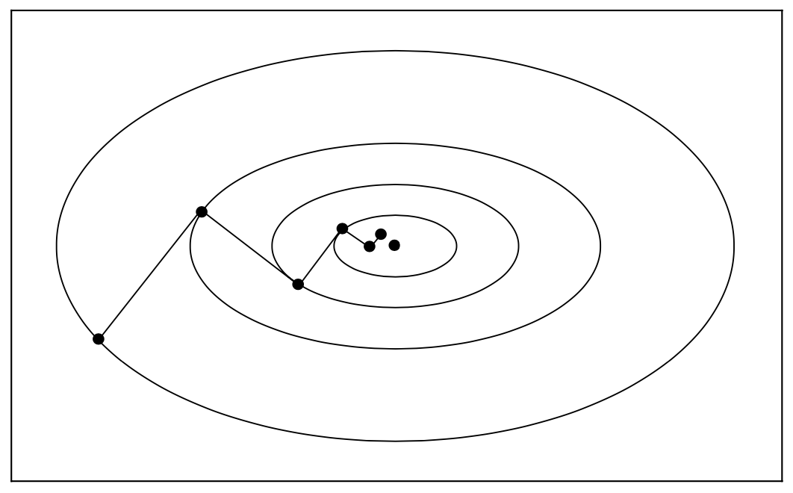

3.3 Rate of Convergence¶
Algorithmic strategies that achieve rapid convergence can sometimes conflict with the requirements of global convergence, and vice versa. The challenge is to design algorithms that incorporate both properties: good global convergence guarantees and a rapid rate of convergence.
Convergence Rate of Steepest Descent¶
Let us suppose that
where \(Q\) is symmetric and positive definite. The gradient is given by \(\nabla f(x) = Qx - b\) and the minimizer \(x^*\) is the unique solution of the linear system \(Qx = b\).
It is easy to compute the step length \(\alpha_k\) that minimizes \(f(x_k - \alpha \nabla f_k)\). By differentiating the funcion \(f(x_k - \alpha \nabla f_k)\) w.r.t. \(\alpha\), we have
Then the steepest descent iteration is given by
which yields a closed-form expression for \(x_{k+1}\) in terms of \(x_k\). In the figure below we plot a tpyical sequence of iterates generated by the steepest descent method on a two-dimensional quadratic objective function.
{kind=link}
To quantify the rate of convergence we introduce the weighted norm \(\lVert x \rVert_Q^2 = x^\top Qx\). By using the relation \(Qx^* = b\), we can show that
Noting that \(\nabla f_k = Q(x_k - x^*)\), we have
(see Exercise 3.7). Since the term inside the brackets is hard to interpret, it is more useful to bound it in terms of condition number of the problem.
Theorem 3.3. When the steepest descent method with exact line searches is applied to the strongly convex quadratic function, the error norm satisfies
where \(0 < \lambda_1 \leq \dots \leq \lambda_n\) are the eigenvalues of \(Q\).
The proof of this theorem is given by Luenberger. This shows that the function values \(f_k\) converge to minimum \(f_*\) at a linear rate. In general, as the condition number \(\kappa(Q) = \lambda_n / \lambda_1\) increase, the contours of the quadratic become more elongated, the zigzagging becomes more pronounced, and the convergence degrades.
Theorem 3.4. Suppose that \(f: \mathbb{R}^n \to \mathbb{R}\) is twice continuously differentiable, and that the iterates generated by the steepest-descent method with exact line searches converge to a point \(x^*\) at which the Hessian matrix \(\nabla^2 f(x^*)\) is positive definite. Let \(r\) be any scalar satisfying
where \(\lambda_1 \leq \dots \leq \lambda_n\) are the eigenvalues of \(\nabla^2 f(x^*)\). Then for all \(k\) sufficiently large, we have
Theorem 3.4 shows that the steepest descent method can have unacceptably slow rate of convergence, even when the Hessian is reasonably well conditioned.
Newton's Method¶
We now consider the Newton iteration, for which the search is given by
Since the Hessian matrix \(\nabla^2 f_k\) may not always be positive definite, \(p_k^N\) may not always be a descent direction. In Section 3.4 and Chapter 4 we will discuss two approaches for obtaining a globally convergent iteration based on the Newton step: a line search approach, in which the Hessian is modified to make it positive definite, and a truth region approach, in which \(\nabla^2 f_k\) is used to form a quadratic model that is minimized in a ball around the current iterate \(x_k\).
Here we disucss the local rate-of-convergence properties of Newton's method. For all \(x\) in the vicinity of a solution point \(x^*\) such that \(\nabla^2 f(x^*)\) is positive definite, the Hessian \(\nabla^2 f(x)\) will also be positive definite.
Theorem 3.5. Suppose that \(f\) is twice differentiable and that the Hessian \(\nabla^2 f(x)\) is Lipschitz continuous in a neighborhood of a solution \(x^*\) at which the sufficient conditions are satisfied (Theorem 2.4). Consider the iteration \(x_{k+1} = x_k + p_k\) where \(p_k^N = - \nabla^2 f_k^{-1} \nabla f_k\). Then
if the starting point \(x_0\) is sufficiently close to \(x^*\), the sequence of iterates converges to \(x^*\)
the rate of convergence of \(\{x_k\}\) is quadratic
the sequence of gradient norms \(\{\lVert \nabla f_k \rVert\}\) converges quadratically to zero
As the iterates generated by Newton's method approach the solution, the Wolfe (or Goldstein) conditions will accept the step length :math:alpha_k = 1` for all large \(k\). Implementations of Newton's method will set \(\alpha_k = 1\) for all large \(k\) and attain local quadratic rate of convergence.
Quasi-Newton Methods¶
Suppose now that the search direction has the form
where the symmetric and positive definite matrix \(B_k\) is updated at every iteration by a Quasi-Newton updating formula. We assume here that the step length \(\alpha_k\) is computed by an inexact line search that satisfies the Wolfe or strong Wolfe conditions, with the same proviso above: The line search algorithms will always try \(\alpha = 1\) first, and will accept this value if it satisfies the Wolfe conditions.
Theorem 3.6. Suppose that \(f: \mathbb{R}^n \to \mathbb{R}\) is twice continuously differentiable. Consider the iteration \(x_{k+1} = x_k + \alpha_k p_k\), where \(p_k\) is a descent direction and \(\alpha_k\) satisfies the Wolfe conditions with \(c_1 \leq 1/2\). If the sequence \(\{x_k\}\) converges to a point \(x^*\) such that \(\nabla f(x^*) = 0\) and \(\nabla^2 f(x^*)\) is positive definite, and if the search direction satisfies
then
the step length \(\alpha_k\) is admissible for all \(k\) greater than a certain index \(k_0\)
if \(\alpha_k = 1\) for all \(k > k_0\), \(\{x_k\}\) converges to \(x^*\) superlinearly
If \(p_k\) is a quasi-Newton search direction, then eq3.36 is equivalent to
Hence we have the result that a superlinear convergence rate can be attained even if the sequence of quasi-Newton matrices \(B_k\) does not converge to \(\nabla^2 f(x^*)\). Importantly, this condition is both necessary and sufficient for the superlinear convergence of quasi-Newton methods.
Theorem 3.7. Suppose that \(f: \mathbb{R}^n \to \mathbb{R}\) is twice continuously differentiable. Consider the iteration \(x_{k+1} = x_k + p_k\) and that \(p_k\) is given by \(p_k = - B_k^{-1} \nabla f_k\). Let us assume that \(\{x_k\}\) converges to a point \(x^*\) such that \(\nabla f(x^*) = 0\) and \(\nabla^2 f(x^*)\) is positive definite. Then \(\{x_k\}\) converges superlinearly if and only if eq3.36 holds.